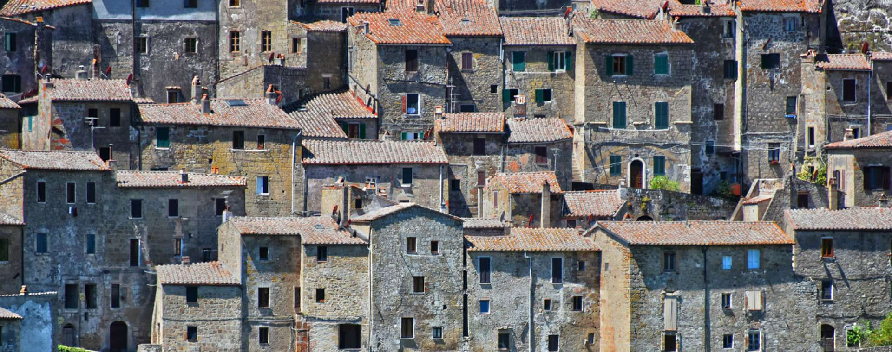
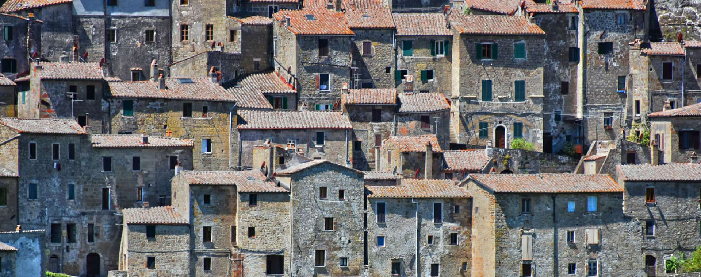
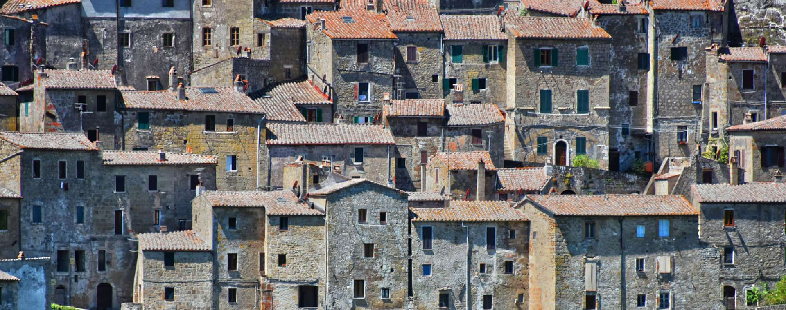
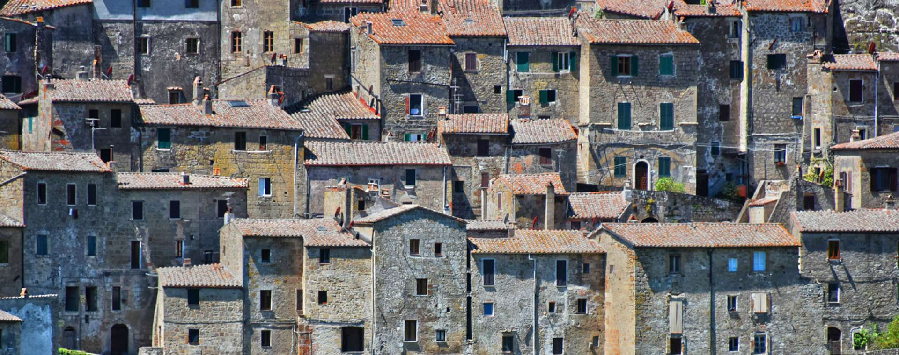

Italy is home to many buildings and sites, dating back to many centuries ago, such as the Colosseum, the Leaning Tower of Pisa, Duomo di Milano and much more.
Immerse yourself in the prosperous fashion industry of Italy, home to many well known luxury brands such as Gucci, Giorgio Armani, Versace and many more.

One of the world's most popular and intricate cuisines can be found in Italy. Come along and explore the origin of your favourite dishes!

The capital city of Italy, and its tourism central. The Colosseum, one of the seven world wonders, can be found here alongside many other historical sites such as the Sistine Chapel, the Vatican Museums and much more. Additionally, it is home to many popular restaurants, offering a wide variety of Italian Cuisine

The fashion capital of Italy. Alongside its many historical sites, such as the Milan Cathedral and the Sforza Castle, it is also home to Italy's biggest fashion brands, offering a large amount of shopping centres and stores owned by large Italian brands such as Gucci, Versace and Diesel.
Stationed in the region of Tuscany, Grosseto is a small coastal city with a rich history. It is home to the San Lorenzo Cathedral, located in the city's main square. ''Marina di Grosseto' is one of the most visisted areas of the city, providing tourists with a large and expansive beach. Additionally, Grosseto has a sprawling night-life everyday, especially along the coast during the Summer, as many tourists and locals end the day by attending to the many local markets and clubs.